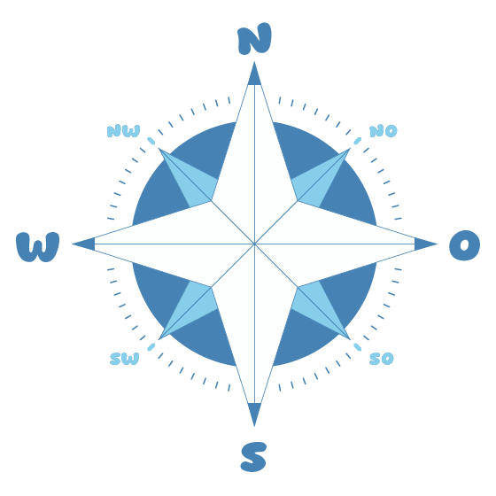
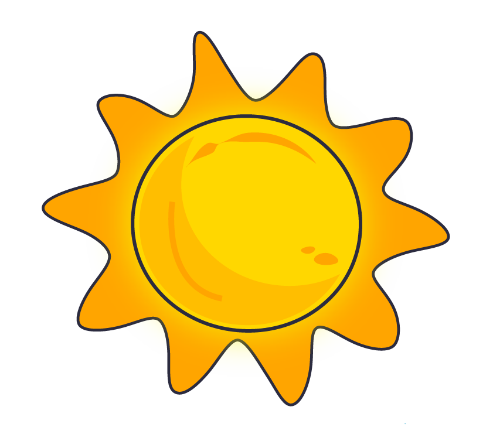

Himmelsrichtungen
Wieso sind Himmelsrichtungen so wichtig?Es ist wichtig, die Himmelsrichtungen zu kennen, weil sie dir helfen, dich zu orientieren. Egal, ob du zur Schule gehst oder draußen unterwegs bist. Wenn du die Himmelsrichtungen kennst, dann weißt du auch, warum Pflanzen an manchen Orten besser wachsen oder wie Tiere ihren Weg finden. |
 |
Hast du schon einmal von einer Windrose gehört?Sie hilft dir, die Himmelsrichtungen anzuzeigen. Es gibt vier Haupt-Himmelsrichtungen: Norden, Osten, Süden und Westen. Es gibt Merksätze, die dir helfen, die Himmelsrichtungen zu merken. Zum Beispiel: „Niemals ohne Seife waschen.“ |
 |
Die Sonne zeigt dir die HimmelsrichtungenDie Himmelsrichtungen helfen dir, deinen Standort zu bestimmen und dich in der Umgebung zu orientieren. Sie hängen mit der Erdrotation und der Position der Sonne zusammen: Die Sonne geht immer im Osten auf und im Westen unter. Auch hier gibt es einen Merksatz, den du unbedingt auswendig lernen solltest – oder kannst du ihn schon?Im Osten geht die Sonne auf, |
Schau dir genauer an, welchen Einfluss die Himmelsrichtungen auf folgende Punkte hat:
Begib dich auf Erkundungstour im Gebirge!
Einige Hinweise bevor du startest
Halte die linke Maustaste gedrückt und bewege deine Maus. So kannst du in alle Richtungen "schauen": nach links, rechts, oben und unten. Schau dich gut um, damit du keine Aufgabe übersiehst!
In der 360°-Tour werden dir einige Symbole begegnen. Fahre mit der Maus über die Symbole, um zu erfahren, was sie bedeuten.
